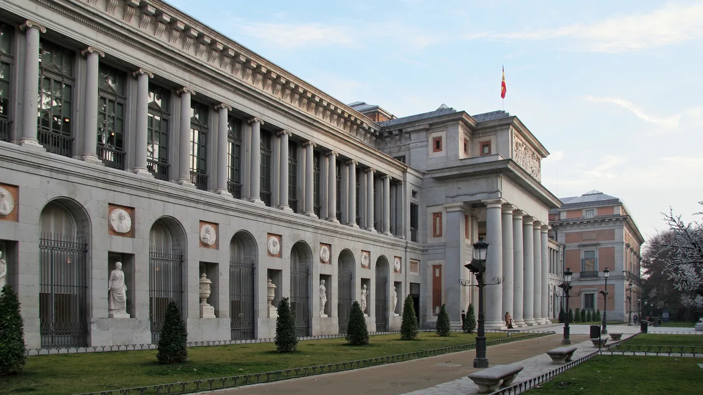

01
Museo Nacional del Prado
Museu€ 15
grátis nas duas horas antes de fechar

Brian Snelson · CC BY 2.0 · via Wikimedia Commons
Valor da entrada
Inteira € 15. Reduzida € 7,50. Com guia oficial impresso, € 24; audioguia custa € 5 à parte.
E é gratuito nas duas horas antes de fechar, todos os dias: de segunda a sábado, das 18h às 20h; domingos e feriados, das 17h às 19h. Não é promoção nem dia específico — é a grade normal, o ano inteiro.
Fontes: indexação do próprio domínio do museu e ficha do esMadrid, o portal oficial de turismo da cidade, consultadas em 29/set/2026. As duas coincidem nos preços e nos horários.
Fonte oficial não aberta a página de horários e preços do próprio Prado está atrás de proteção anti-bot da Cloudflare e não abriu para conferência direta — nem por leitura de página, nem por navegador. Não contornamos esse tipo de proteção. Por isso citamos as duas fontes que abriram, e dizemos qual não abriu.
E é gratuito nas duas horas antes de fechar, todos os dias: de segunda a sábado, das 18h às 20h; domingos e feriados, das 17h às 19h. Não é promoção nem dia específico — é a grade normal, o ano inteiro.
Fontes: indexação do próprio domínio do museu e ficha do esMadrid, o portal oficial de turismo da cidade, consultadas em 29/set/2026. As duas coincidem nos preços e nos horários.
Fonte oficial não aberta a página de horários e preços do próprio Prado está atrás de proteção anti-bot da Cloudflare e não abriu para conferência direta — nem por leitura de página, nem por navegador. Não contornamos esse tipo de proteção. Por isso citamos as duas fontes que abriram, e dizemos qual não abriu.
Dias em que não funciona
Abre todos os dias. Segunda a sábado, das 10h às 20h; domingos e feriados, das 10h às 19h. A bilheteria abre às 9h45.
A janela gratuita é a mais disputada do dia, com fila que se forma antes das 18h. Duas horas também não são muito para um acervo deste tamanho: quem vai de graça escolhe salas em vez de ver tudo.
A janela gratuita é a mais disputada do dia, com fila que se forma antes das 18h. Duas horas também não são muito para um acervo deste tamanho: quem vai de graça escolhe salas em vez de ver tudo.
Pontos de referência
Fica no eixo do Paseo del Prado, com o Real Jardín Botánico ao lado e o Parque del Retiro subindo a ladeira atrás. O Thyssen fica a poucos minutos a pé ao norte e o Reina Sofía ao sul — os três formam o Paseo del Arte e se fazem andando.
Ver no mapa
Ver no mapa